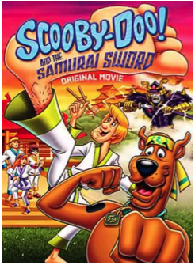
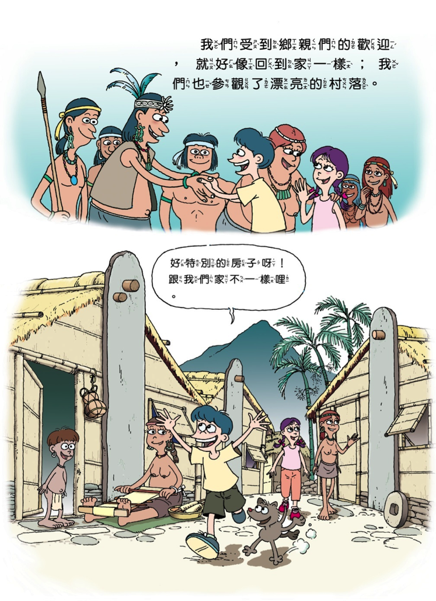
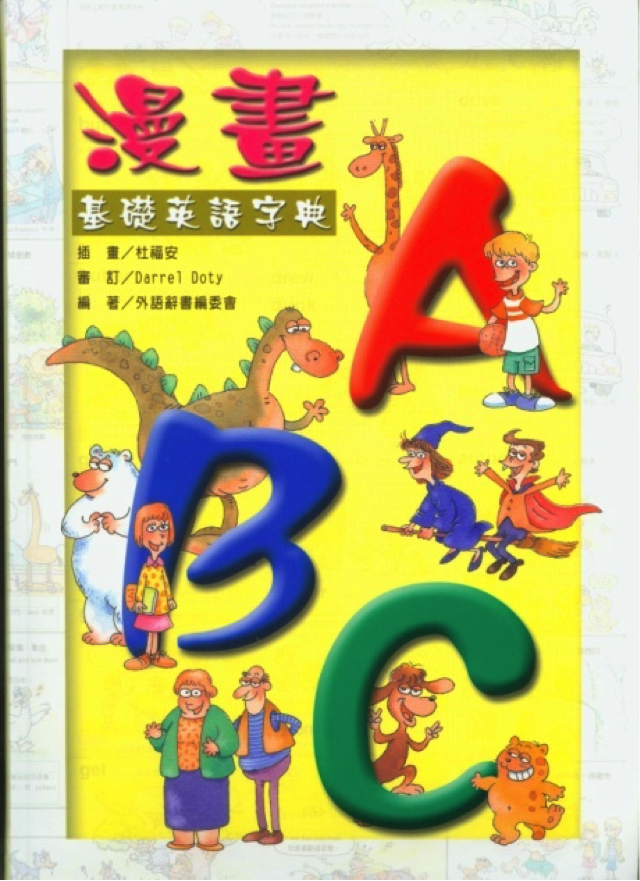
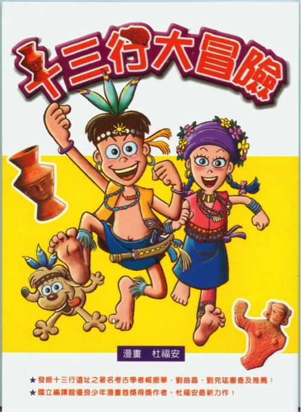

復興商工職校美工科畢業，目前專職漫畫也是中華漫畫家協會理事， 30年以上資深動畫工作者、作畫監督、動畫導演， 曾參與製作過許多部台日歐美動畫系列作品， 較著名的是老夫子長片(作畫監督)、中華五千年系列片其中兩部(片集導演)、 西班牙歷史動畫片”加泰隆尼亞”、德國動畫片”小矮人”等等的片集導演及美國Disney的小美人魚、 BONKERS、夜行神龍、SPIDER’(原畫指導)。
大約2000年開始專職於漫畫創作，作品兩度獲得國立編譯館優良漫畫首獎。 曾在Y17、京華城、桃園文化園區、中崙圖書館、成功大學、逢甲大學暑期漫畫教學。 2011年大同技術學院多媒體系演講”漫話漫畫”。 2013年逢甲大學通識教育中心四所大學遠距教學演講科普傳播關尚仁主任主辦的”科普漫畫”講座。 2013年07/03台南復興國中”歷史漫畫”講座、08/12逢甲大學科普傳播主辦的暑期漫畫班、08/14、08/21高雄科工館暑期漫畫班。 2014年10/22高雄醫藥大學科普傳播主辦的遠距教學專題演講。 2015年10/28成功大學科普傳播主辦的遠距教學專題演講。 2015年11/17~12/22世新大學數位多媒設計系原住民專班協同教學客座老師。
1968年~1970年”影人卡通公司”(動畫)。
1970年~1971年”天然色影視公司”(廣告片腳本、美術企畫、動畫製作)。
1973年”中華卡通”(電影長片原畫)。
1976年”上上卡通公司”(電視片集構圖/原畫/作畫監督)。
1978年”宏廣卡通公司”(電視片集原畫/原畫指導)。
1979年”基甸動畫有限公司”(電視片集構圖/原畫/作畫監督)。
1980年”遠東卡通公司”(電影長片作畫監督/電視片集腳本/片集導演)。
1986年”中日動畫有限公司”(電視片集作畫監督)。
1989年~1998年”杜老爺動畫有限公司”(電視片集造型設計/場景設計/腳本/原畫指導/導演)。
1998年~2015年”杜老爺漫畫工作室”(漫畫家)。
(右圖感謝杜福安先生提供)。
1994年杜老爺出版社『12生肖總動員』。
1995年東立出版單行本漫畫『Play Boy』。
2002年玉山社出版『漫畫台灣歷史』第一、二、三集。
2004年玉山社出版『漫畫台灣歷史』第四集。
2004年五南圖書出版『漫畫ABC-英語字典』。
2005年台中市文化局出版 『小來的故鄉-台中市惠來遺址』(插畫)。
2005年十三行博物館出版 漫畫『十三行大冒險』。
2006年台北縣客家文化園區出版『台北客家故事』及漫畫展。
2006年國科會出版『多樣性台灣-黑狗大風』(插畫+漫畫)。
2007年插畫『拍瀑拉族-大肚王傳奇』。
2009年台南市政府出版『鹿陶洋-江家聚落的故事』(漫畫)。
2012年 玉山社出版『烈火中的228』(漫畫)。
2013年玉山社出版『完全版-漫畫台灣歷史(全三冊)』。
2013年貓頭鷹出版社『台灣史新聞』(漫畫+插畫)。
2015年台灣教會公報社『愛與奉獻-馬偕的故事』。
(左圖感謝杜福安先生提供)。
2003年漫畫台灣歷史第三集『荷蘭‧西班牙在台灣』榮獲國立編譯館優良漫畫首獎。
2004年『漫畫四人繪』漫畫聯展9月在台北縣文化中心展出。
2005年【漫畫ABC－基礎英語字典】榮獲新聞局「中小學生優良課外讀物」。
2005年 漫畫『十三行大冒險』舉行校園巡迴展。
2005年九月獲邀提出漫畫作品代表台灣參加韓國釜山APEC會議的漫畫展。
2006年台北縣客家文化園區『台北客家故事』漫畫展。
2006年『漫畫十三行大冒險』榮獲國立編譯館優良漫畫首獎。
2006年『十三行大冒險-漫畫巡迴展』7月～10月在台北市、縣展出。
2006年『黑狗大風』插畫在「多樣性台灣特展」裡展出。
2007~2011年漫畫家協會年度展參展。
2012年台南生活美學館”動漫華爾滋”參展。
2012年凱達格蘭族漁獵圖作品授權給台北市政府。
2014年『完全版-漫畫台灣歷史』獲台北市文化局推薦「中小學生優良課外讀物」。
2015年3/26~6/14漫畫家協會會員展在板橋府中15”漫世代的奇想”漫畫展參展。
2015年4月繪作顏思齊的故事/雲林縣水林鄉顏厝寮的”顏思齊開台文化展”。
2015年5/25~10/24繪作插畫/高雄醫藥大學”馬雅各來台150週年紀念特展”。
2015年9/7~10/18漫畫家協會在新北市青少年圖書館漫畫展會員展參展。
2015年12/10~1231嶺東科大邀請”台灣當代漫畫創作展”。
 